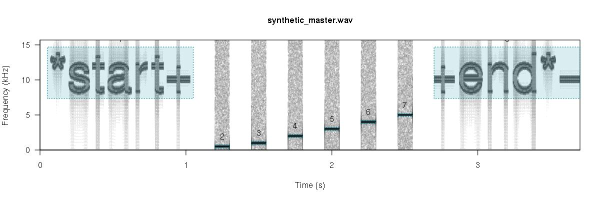
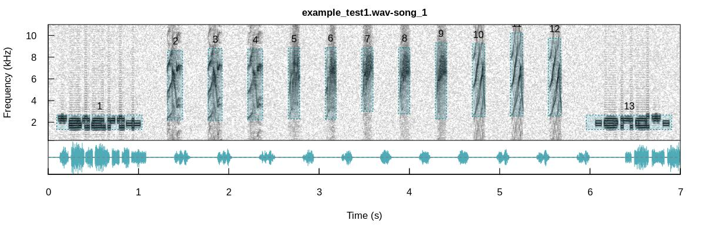
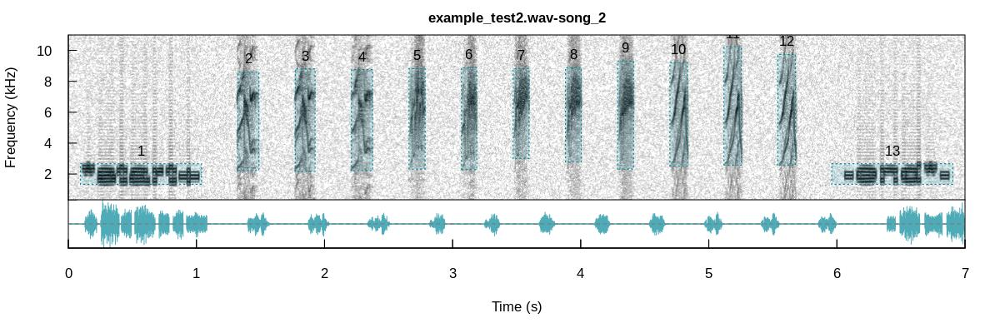
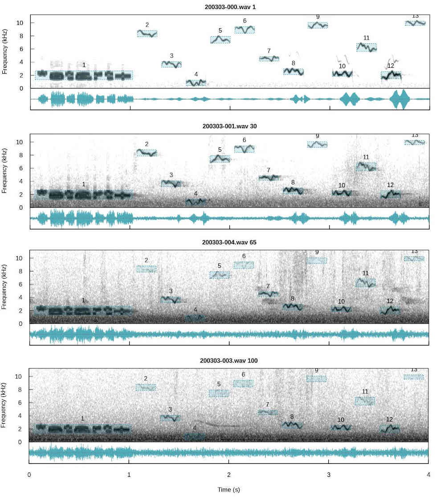
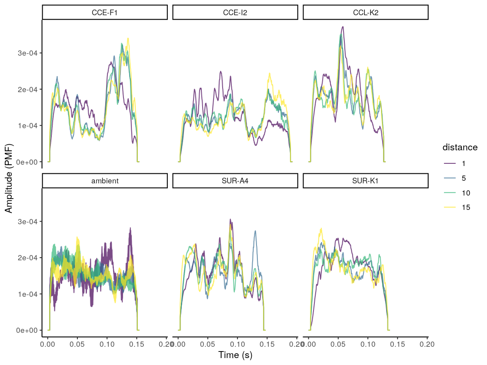
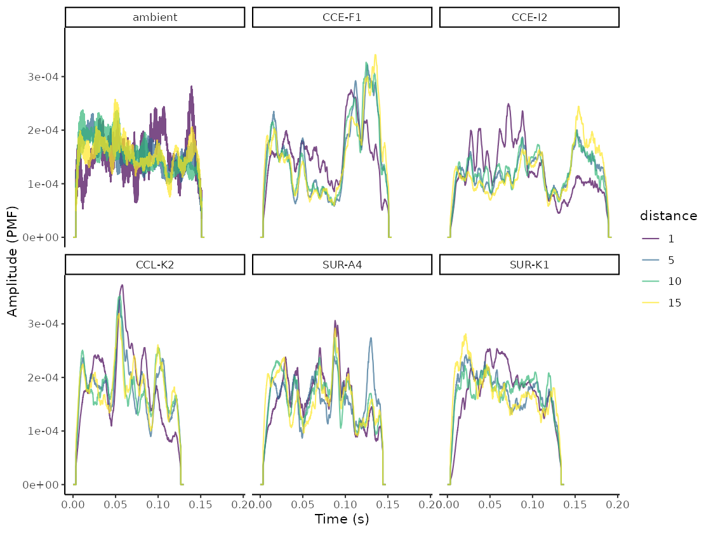
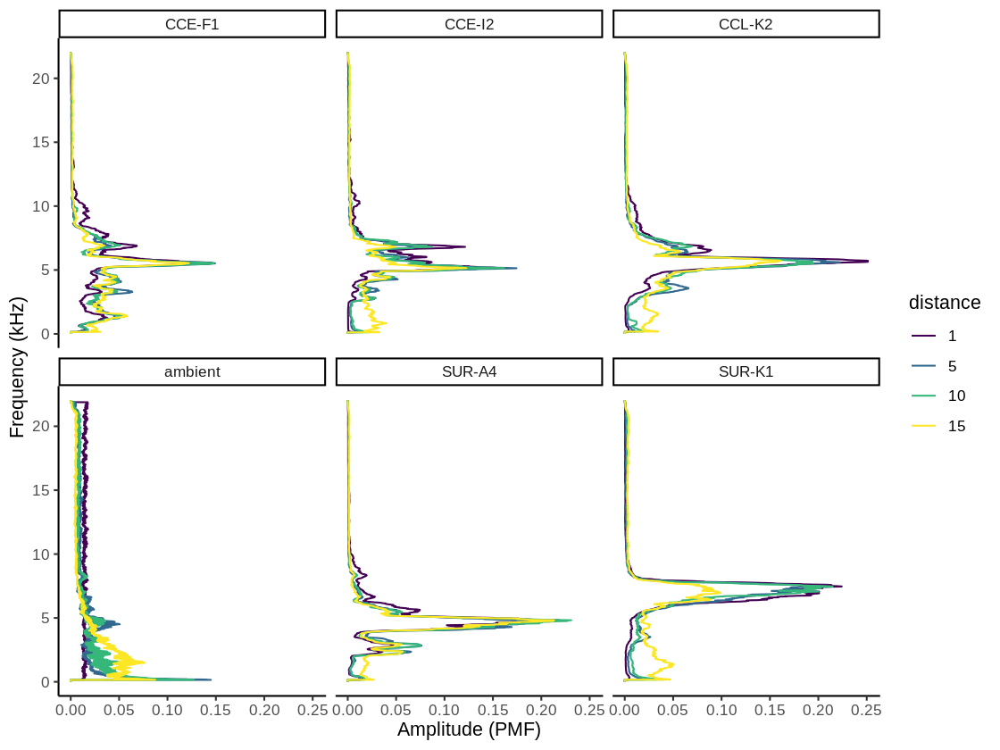
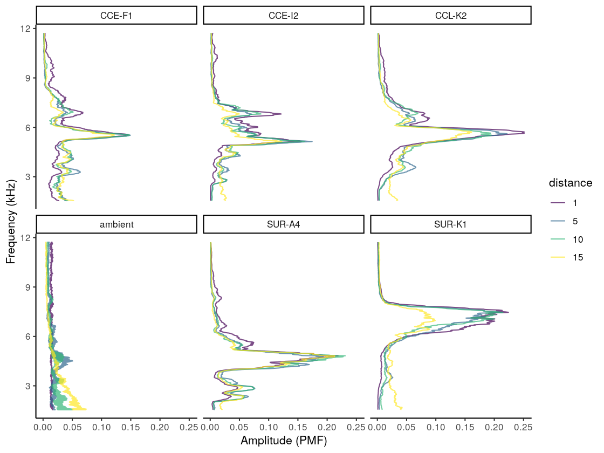
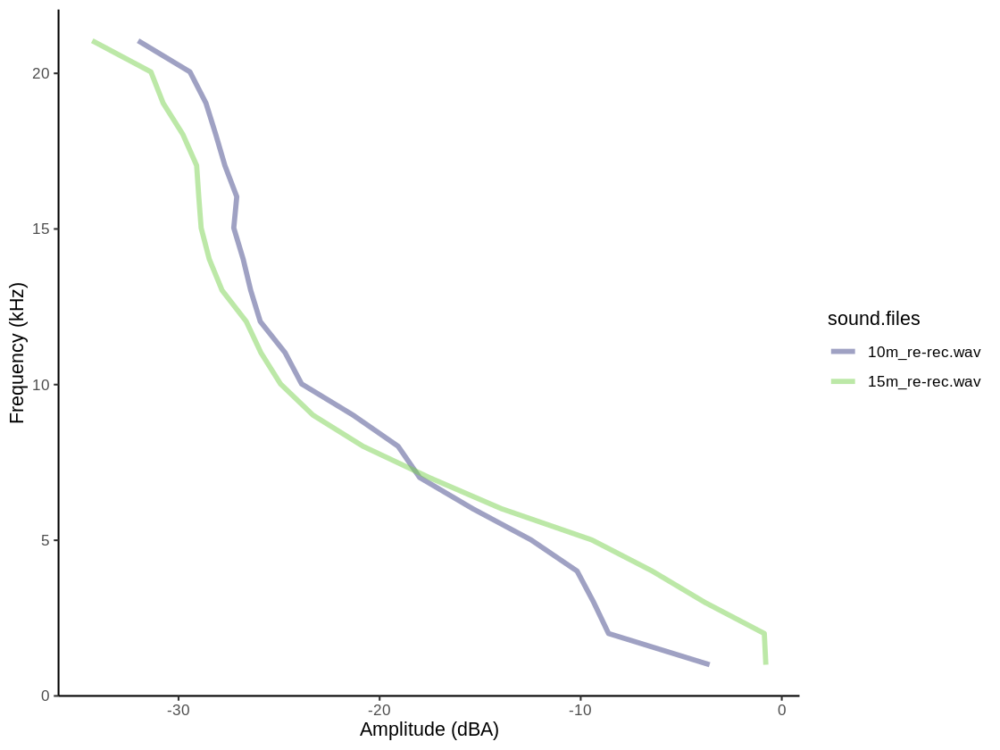
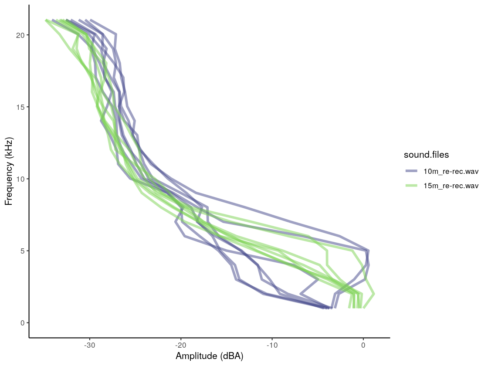

baRulho
Quantifying (animal) acoustic signal transmission and degradation
Marcelo Araya-Salas, PhD
“2020-03-29”
Source: vignettes/baRulho_quantifying_sound_degradation.Rmd
baRulho_quantifying_sound_degradation.Rmd
The baRulho package is intended to facilitate acoustic analysis of (animal) sound transmission experiments. Such studies typically aim to quantify changes in signal structure when transmitted in a given habitat by broadcasting and re-recording animal sounds at increasing distances. We will refer to these changes in signal structure ‘degradation’ for the sake of simplicity. The package offers a workflow with functions to prepare the data set for analysis as well as to calculate and visualize several degradation metrics. baRulho builds upon functions and data formats from the warbleR and seewave packages, so some experience with these packages is advised.
The main features of the package are:
- The use of loops to apply tasks through acoustic signals referenced in a selection table (sensu warbleR)
- The production of image files with graphic representations of sound in time and/or frequency that let users verify acoustic analyses
- The use of extended selection tables (sensu warbleR) as the object format to input acoustic data and annotations (except for
atmospheric_attenuation()) and to output results - The use of parallelization to distribute tasks among several cores to improve computational efficiency
The package can be install/load from CRAN as follows:
# From CRAN would be
install.packages("baRulho")
#load package
library(baRulho)To install the latest developmental version from github you will need the R package devtools:
# From github
devtools::install_github("maRce10/baRulho")
#load package
library(baRulho)
# also set a working directory, for this example we will use a temporary directory
td <- tempdir()For this vignette we will also need a few more packages:
Inputting acoustic data and annotations
The package requires the data to be input as extended selection tables. An extended selection table is an object class in R that contains both the annotations (locations of signals in time and frequency) and the corresponding acoustic data as wave objects. Therefore, these are self-contained objects since the original sound files are no longer needed to perform acoustic analyses. These objects are created by the selection_table() function from warbleR. Take a look at the intro to warbleR vignette for more details.
Glossary
-Model signal: signal in which transmission properties will be studied, usually found in the original field recordings or synthetic sound files.
-Reference signal: signal to use as a pattern to compare against. Usually created by re-recording a model signal broadcast at 1 m from the source (speaker).
-Signal type: signal category. For instance song types (e.g. A, B, C), call types (alert, foraging, etc).
-Ambient noise: energy from background sounds in the recording, excluding signals of interest.
-Test signal: signals re-recorded far from the source to test for transmission/degradation (also refer to as ‘re-recorded’ signals).
-Degradation: term used to describe any changes in the structure of a signal when transmitted in a given habitat (note that there is no agreement on this terminology in the scientific community).
Workflow of sound processing and analysis
A common sequence of steps to experimentally test hypotheses related to signal transmission is depicted in the following diagram:

baRulho offers functions for critical steps in this workflow (those in black, including ‘checks’) that required acoustic data manipulation and analysis. Additional functions from warbleR can be used (and are used in this vignette) to complement functions in baRulho. All these tools will be presented following the above workflow.
Synthesize sounds
We often want to figure out how transmission properties vary across a range of frequencies. For instance, Tobias et al (2010) studied whether acoustic adaptation (a special case of sensory drive; Morton 1975), could explain song evolution in Amazonian avian communities. To test this the authors created synthetic pure tone sounds that were used as playback and re-recorded in different habitats. This is the actual procedure of creating synthetic sounds as they described it:
“Tones were synthesized at six different frequencies (0.5, 1.0, 2.0, 3.0, 4.0, and 5.0 kHz) to encompass the range of maximum avian auditory sensitivity (Dooling 1982). At each frequency, we generated two sequences of two 100-msec tones. One sequence had a relatively short interval of 150 msec, close to the mean internote interval in our sample (152± 4 msec). The other sequence had a longer interval of 250 msec, close to the mean maximum internote interval in our sample (283± 74 msec). The first sequence reflects a fast-paced song and the second a slower paced song (sensu Slabbekoorn et al. 2007). The master file (44100 Hz/16 bit WAV) thereby consisted of a series of 12 pairs of artificial 100-ms constant-frequency tones at six different frequencies (0.5, 1.0, 2.0, 3.0, 4.0, and 5.0 kHz).”
We can synthesize the same pure tones using the function sim_songs() from the package warbleR. The function requires 1) the number of tones to synthesize (argument n), 2) the duration of the tones (durs, in seconds), 3) the duration of the intervals (gaps, in seconds) and 4) the frequencies for each tone to be synthesized (freqs, in kHz). In addition, the argument diff.fun should be set to “pure.tone” and the argument harm to 1 to remove harmonics. In our case we need six tones of 100 ms at 0.5, 1, 2, 3, 4, and 5 kHz separated by intervals of 150 ms (at least for the first synthetic file described in Tobias et al 2010). We can also get a selection table (sensu warbleR) with the information about the time and frequency location of every sound. This would be required in order to make the master sound file. To get the selection table we need to set the argument selec.table = TRUE. This can be done as follows:
# synthesize
synth.l <- sim_songs(n = 6, durs = 0.1, freqs = c(0.5, 1:5), harms = 1, gaps = 0.15,
diff.fun = "pure.tone", selec.table = TRUE, path = td)
# plot spectro
spectro(synth.l$wave, scale = FALSE, palette = reverse.topo.colors,
grid = FALSE, flim = c(0,6), collevels = seq(-20, 0, 1))
The function returns a list in which the first element is the selection table and the second one the wave object:
class(synth.l) ## [1] "list"names(synth.l)## [1] "selec.table" "wave"synth.l$selec.table | sound.files | selec | start | end | bottom.freq | top.freq |
|---|---|---|---|---|---|
| 2020-01-09_17:00:50.wav | 1 | 0.15 | 0.25 | 0.5 | 0.5 |
| 2020-01-09_17:00:50.wav | 2 | 0.40 | 0.50 | 1.0 | 1.0 |
| 2020-01-09_17:00:50.wav | 3 | 0.65 | 0.75 | 2.0 | 2.0 |
| 2020-01-09_17:00:50.wav | 4 | 0.90 | 1.00 | 3.0 | 3.0 |
| 2020-01-09_17:00:50.wav | 5 | 1.15 | 1.25 | 4.0 | 4.0 |
| 2020-01-09_17:00:50.wav | 6 | 1.40 | 1.50 | 5.0 | 5.0 |
The function also saves the associated ‘.wav’ file in the working directory (in this example tempdir()).
list.files(path = td, pattern = "\\.wav$")## character(0)## [1] "2020-01-09_17:00:50.wav"
Create master sound file for playback
The function master_sound_file() creates a master sound file (as you probably guessed) for playback experiments. The function takes wave objects from an extended selection table containing the model signals and concatenates them in a single sound file (with some silence in between signals which length can be modified). master_sound_file() adds acoustic markers at the start and end of the playback that can be used to time-sync re-recorded signals, which streamlines quantification of acoustic degradation. The following example shows how to create a master sound file using the synthetic sounds generated above. For the synthetic sounds we need to add a little space between the top and bottom frequency because sim_songs() make those values exactly the same for pure tones:
# extract selection table
st <- synth.l$selec.table
# add freq range (0.5 kHz)
st$bottom.freq <- st$bottom.freq - 0.25
st$top.freq <- st$top.freq + 0.25
# make an extended selection table
synth.est <- selection_table(X = st, extended = TRUE, pb = FALSE,
confirm.extended = FALSE, path = td)
# create master sound file
synth.master.sf <- master_sound_file(X = synth.est, file.name = "synthetic_master",
dest.path = td, gap.duration = 0.15)
The function saves the master sound file as a wave file and returns a selection table in the R environment with the time and frequency ‘coordinates’ of the signals in that file. We can look at the spectrogram of the output file using the warbleR function spectrograms() as follows:
# plot spectro (saved in working directory)
spectrograms(synth.master.sf, path = td, by.song = "sound.files",
xl = 3, collevels = seq(-60, 0, 5), osci = TRUE)
The function can also create a master sound file from sounds from different sounds files, as is likely the case with recordings collected in the field. The following example shows how to create a master sound file using several sound files. The code uses the example data and recordings from the package warbleR:
# load example data from warbleR
data(list = c("Phae.long1", "Phae.long2", "Phae.long3", "Phae.long4",
"lbh_selec_table"))
# save sound files to temporary folder
writeWave(Phae.long1, file.path(td, "Phae.long1.wav"))
writeWave(Phae.long2, file.path(td, "Phae.long2.wav"))
writeWave(Phae.long3, file.path(td, "Phae.long3.wav"))
writeWave(Phae.long4, file.path(td, "Phae.long4.wav"))
# make an extended selection table
est <- selection_table(X = lbh_selec_table, extended = TRUE, confirm.extended = FALSE,
path = td)
# create master sound file
master.sf <- master_sound_file(X = est, file.name = "example_master",
dest.path = td, gap.duration = 0.3)
Again, we can look at the spectrogram of the output file:
spectrograms(master.sf, path = td, by.song = "sound.files",
xl = 3, collevels = seq(-60, 0, 5), osci = TRUE)
Note that the output could also be exported to Raven sound analysis software (Cornell Lab of Ornithology) for visualization or further manipulation using the function exp_raven() from the Rraven package. exp_raven() exports selections in the R environment to a ‘.txt’ file that can be read in Raven:
Rraven::exp_raven(master.sf, path = td, file.name = "example_master_selection_table")
Both sound files and annotations can be visualized in Raven:

Take a look at the Rraven vignette for more details.
Note that the start and end markers are placed at relatively low amplitudes so they are less affected by degradation. The frequency range of markers can be set with argument flim. The relative amplitude of markers can also be adjusted with the amp.marker argument. Amplitude of markers will be multiplied by the value supplied so markers will be louder than signals. These two features should increases the chances of being “detected” at further distances regardless of the amplitude of signals.
Time sync re-recorded sounds
Once we went to the field (or lab) and re-recorded the master sound files at different distances, we are ready to start with data analysis. The first step for getting the data ready for analysis involves finding signals within the re-recorded sound files. We only need to align the start marker between the master playback and the re-recorded sound files, based on the fact that the time difference between the marker and the signals should be the same in both cases:

To simulate re-recorded sound files we will make two copies of the master sound file, add some silence at the beginning (1 and 2 seconds) and add noise:
# read master
exmp.master <- readWave(file.path(td, "example_master.wav"))
# add 1 s silence and create first copy
exmp.test1 <- addsilw(wave = exmp.master, at = "start", d = 1, output = "Wave", f = exmp.master@samp.rate)
# add 2 s silence and create second copy
exmp.test2 <- addsilw(wave = exmp.master, at = "start", d = 2, output = "Wave", f = exmp.master@samp.rate)
# make noise
ns <- noisew(f = exmp.master@samp.rate, d = duration(exmp.test2) + 1, output = "Wave")
# make noise exactly the same length and add noise to 2 examples
exmp.test1@left <- exmp.test1@left + (ns@left[1:length(exmp.test1@left)] * 150)
exmp.test2@left <- exmp.test2@left + (ns@left[1:length(exmp.test2@left)] * 150)
# normalize both before saving
exmp.test1 <- normalize(exmp.test1, unit = "16")
exmp.test2 <- normalize(exmp.test2, unit = "16")
# save simulated re-recorded sound files
writeWave(object = exmp.test1, filename = file.path(td, "example_test1.wav"), extensible = FALSE)
writeWave(object = exmp.test2, filename = file.path(td, "example_test2.wav"), extensible = FALSE)
To find the location of the start marker on these (simulated) re-recorded sound files we use the functions search_templates() to run a cross-correlation of one or more markers across the test (re-recorded) files to determine the exact time in which each marker is found:
found.starts <- search_templates(X = master.sf, template.rows = which(master.sf$orig.sound.file == "start_marker"), test.files = c("example_test1.wav", "example_test2.wav"), path = td); pks
| test.files | selec | start | end | template | time | score |
|---|---|---|---|---|---|---|
| example_test1.wav | 1 | 2.00062 | 2.99928 | example_master.wav-1 | 2.49995 | 0.882420 |
| example_test2.wav | 1 | 3.00084 | 3.99950 | example_master.wav-1 | 3.50017 | 0.879969 |
We could also use the end marker as template in case the start marker was masked by other sounds.
The output of search_templates() indicates that the start markers are found starting at ~2 s and ~3 s (2.00062 s and 3.00084 s), which was expected as master_sound_file() inserts a 1 second silence at the beginning of the master sound files and we added 1 s and 2 s to each simulated file respectively. With this information we can infer the position of all other selections in the new recordings. A selection table from re-recorded files can be generated using the function align_test_files():
alg.tests <- align_test_files(X = master.sf, Y = found.starts, path = td, by.song = TRUE)
By default the function returns an extended_selection_table created ‘by.song’ (see ‘?selection_table()’), which is the data format that pretty much all baRulho functions take.
is_extended_selection_table(alg.est)
alg.est## [1] TRUE| sound.files | selec | start | end | bottom.freq | top.freq | template |
|---|---|---|---|---|---|---|
| example_test1.wav-song_example_test1.wav | 1 | 0.10000 | 1.09867 | 1.33333 | 2.66667 | start_marker |
| example_test1.wav-song_example_test1.wav | 2 | 1.39867 | 1.57173 | 2.22011 | 8.60438 | Phae.long1.wav_1 |
| example_test1.wav-song_example_test1.wav | 3 | 1.87173 | 2.03484 | 2.16944 | 8.80705 | Phae.long1.wav_2 |
| example_test1.wav-song_example_test1.wav | 4 | 2.33484 | 2.50982 | 2.21829 | 8.75660 | Phae.long1.wav_3 |
| example_test1.wav-song_example_test1.wav | 5 | 2.80982 | 2.94244 | 2.31686 | 8.82232 | Phae.long2.wav_1 |
| example_test1.wav-song_example_test1.wav | 6 | 3.24244 | 3.36862 | 2.28401 | 8.88803 | Phae.long2.wav_2 |
| example_test1.wav-song_example_test1.wav | 7 | 3.66862 | 3.79987 | 3.00683 | 8.82232 | Phae.long3.wav_1 |
| example_test1.wav-song_example_test1.wav | 8 | 4.09987 | 4.23009 | 2.77684 | 8.88803 | Phae.long3.wav_2 |
| example_test1.wav-song_example_test1.wav | 9 | 4.53009 | 4.66133 | 2.31686 | 9.31515 | Phae.long3.wav_3 |
| example_test1.wav-song_example_test1.wav | 10 | 4.96133 | 5.10680 | 2.51400 | 9.21659 | Phae.long4.wav_1 |
| example_test1.wav-song_example_test1.wav | 11 | 5.40680 | 5.55102 | 2.57971 | 10.23512 | Phae.long4.wav_2 |
| example_test1.wav-song_example_test1.wav | 12 | 5.85102 | 5.99618 | 2.57971 | 9.74228 | Phae.long4.wav_3 |
| example_test1.wav-song_example_test1.wav | 13 | 6.29618 | 7.29484 | 1.33333 | 2.66667 | end_marker |
| example_test2.wav-song_example_test2.wav | 1 | 0.10000 | 1.09867 | 1.33333 | 2.66667 | start_marker |
| example_test2.wav-song_example_test2.wav | 2 | 1.39867 | 1.57173 | 2.22011 | 8.60438 | Phae.long1.wav_1 |
| example_test2.wav-song_example_test2.wav | 3 | 1.87173 | 2.03484 | 2.16944 | 8.80705 | Phae.long1.wav_2 |
| example_test2.wav-song_example_test2.wav | 4 | 2.33484 | 2.50982 | 2.21829 | 8.75660 | Phae.long1.wav_3 |
| example_test2.wav-song_example_test2.wav | 5 | 2.80982 | 2.94244 | 2.31686 | 8.82232 | Phae.long2.wav_1 |
| example_test2.wav-song_example_test2.wav | 6 | 3.24244 | 3.36862 | 2.28401 | 8.88803 | Phae.long2.wav_2 |
| example_test2.wav-song_example_test2.wav | 7 | 3.66862 | 3.79987 | 3.00683 | 8.82232 | Phae.long3.wav_1 |
| example_test2.wav-song_example_test2.wav | 8 | 4.09987 | 4.23009 | 2.77684 | 8.88803 | Phae.long3.wav_2 |
| example_test2.wav-song_example_test2.wav | 9 | 4.53009 | 4.66133 | 2.31686 | 9.31515 | Phae.long3.wav_3 |
| example_test2.wav-song_example_test2.wav | 10 | 4.96133 | 5.10680 | 2.51400 | 9.21659 | Phae.long4.wav_1 |
| example_test2.wav-song_example_test2.wav | 11 | 5.40680 | 5.55102 | 2.57971 | 10.23512 | Phae.long4.wav_2 |
| example_test2.wav-song_example_test2.wav | 12 | 5.85102 | 5.99618 | 2.57971 | 9.74228 | Phae.long4.wav_3 |
| example_test2.wav-song_example_test2.wav | 13 | 6.29618 | 7.29484 | 1.33333 | 2.66667 | end_marker |
We can check the precision of the alignment by looking at the spectrograms:
spectrograms(alg.tests, by.song = "sound.files", xl = 3, collevels = seq(-60, 0, 5), dest.path = td, osci = TRUE)

Below are some examples from actual test signals that were re-recorded in the field at 1, 30, 65, and 100 m respectively, and were later aligned using the start marker:

Further aligning
When this process is done manually (or when broadcasting devices add some short delays as the case of some bluetooth transmitters) there could be some small misalignment between the inferred versus the actual start time of re-recorded signals. This is problematic for quantifying degradation in baRulho (and other sound analysis software) as precise alignment of signal is crucial for the accuracy of downstream measures of signal degradation.
Misalignment can be fixed with the function spcc_align(). This function uses spectrogram cross-correlation to sync the position in time of signals with regard to a reference signal. spcc_align() takes the signal recorded at the closest distance to the source as the reference signal. The function calls warbleR’s xcorr() and find_peaks() (just as we did above) internally to align signals using cross-correlation.
baRulho comes with an example data set called playback_est_unaligned, which contains signals in which the time position of signals is slightly unaligned. We can use this data to show how the function spcc_align():
data("playback_est_unaligned")
# method 1
playback_est_aligned <- spcc_align(X = playback_est_unaligned)The output extended selection table contains the new start and end values after alignment.
This is how the signals look before and after being aligned:
# rename sound files so aligned and unaligned signals are intercalated
unalg <- rename_waves_est(playback_est_unaligned, playback_est_unaligned$sound.files, new.selec = seq(1, 200, by = 2)[1:nrow(playback_est_unaligned)])
alg <- rename_waves_est(playback_est_aligned, playback_est_aligned$sound.files, new.selec = seq(2, 200, by = 2)[1:nrow(playback_est_aligned)])
# add label
unalg$type <- "Before aligning"
alg$type <- "After aligning"
# put together in a single ext sel tab
unalg.alg <- rbind(unalg, alg)
# create spectrograms
spectrograms(unalg.alg[unalg.alg$signal.type != "ambient", ], dest.path = tempdir(), res = 100, wl = 300, title.labels = "type", sel.labels = NULL)
In case this doesn’t work as expected there is a plan B. The function seltailor() from warbleR allows user to manually adjust the start and end of signals in a extended selection table.
Quantifying signal degradation
Most baRulho functions are design to quantify acoustic signal degradation. There are a few important things to keep in mind about functions for quantifying degradation:
- The package currently assumes that all recordings have been made with the same equipment and recording volume. This will be modified in future versions to allow for amplitude calibration of recordings.
- Wave envelope and frequency spectrum calculations are made after applying a bandpass filter within the frequency range of the reference signal (‘bottom.freq’ and ‘top.freq’ columns)
- The package offers two methods to compare signals to the reference:
- Compare all signals with the counterpart that was recorded at the closest distance to source (e.g. compare a signal recorded at 5m, 10m and 15m with its counterpart recorded at 1m). This is the default method.
- Compare all signals with the counterpart recorded at the distance immediately before (e.g. a signal recorded at 10m compared with the one recorded at 5m, then signal recorded at 15m compared with the one recorded at 10m and so on).
Required data structure
As mentioned above the data must be in extended_selection_table format. The data should also contain some additional information. baRulho comes with an example extended_selection_table data set that can be used to understand the required data structure: s
data("playback_est")
playback_est| sound.files | selec | start | end | bottom.freq | top.freq | signal.type | distance |
|---|---|---|---|---|---|---|---|
| 01m_re-rec.wav | 1 | 0.0500000 | 0.2072789 | 2.238685 | 11.58918 | CCE-F1 | 1 |
| 05m_re-rec.wav | 1 | 0.0444060 | 0.2016849 | 2.238685 | 11.58918 | CCE-F1 | 5 |
| 10m_re-rec.wav | 1 | 0.0420688 | 0.1993477 | 2.238685 | 11.58918 | CCE-F1 | 10 |
| 15m_re-rec.wav | 1 | 0.0420688 | 0.1993477 | 2.238685 | 11.58918 | CCE-F1 | 15 |
| 01m_re-rec.wav | 4 | 1.0500000 | 1.2444898 | 1.544095 | 10.89459 | CCE-I2 | 1 |
| 05m_re-rec.wav | 4 | 1.0465092 | 1.2409990 | 1.544095 | 10.89459 | CCE-I2 | 5 |
| 10m_re-rec.wav | 4 | 1.0418547 | 1.2363445 | 1.544095 | 10.89459 | CCE-I2 | 10 |
| 15m_re-rec.wav | 4 | 1.0418547 | 1.2363445 | 1.544095 | 10.89459 | CCE-I2 | 15 |
| 01m_re-rec.wav | 5 | 1.5500000 | 1.6814512 | 2.376997 | 11.72750 | CCL-K2 | 1 |
| 05m_re-rec.wav | 5 | 1.5482417 | 1.6796930 | 2.376997 | 11.72750 | CCL-K2 | 5 |
| 10m_re-rec.wav | 5 | 1.5423809 | 1.6738321 | 2.376997 | 11.72750 | CCL-K2 | 10 |
| 15m_re-rec.wav | 5 | 1.5423809 | 1.6738321 | 2.376997 | 11.72750 | CCL-K2 | 15 |
| 01m_re-rec.wav | 3 | 0.7980000 | 0.9552789 | 2.238685 | 11.58918 | ambient | 1 |
| 05m_re-rec.wav | 3 | 0.7980000 | 0.9552789 | 2.238685 | 11.58918 | ambient | 5 |
| 10m_re-rec.wav | 3 | 0.7980000 | 0.9552789 | 2.238685 | 11.58918 | ambient | 10 |
| 15m_re-rec.wav | 3 | 0.7980000 | 0.9552789 | 2.238685 | 11.58918 | ambient | 15 |
| 01m_re-rec.wav | 6 | 1.7650000 | 1.9222789 | 2.238685 | 11.58918 | ambient | 1 |
| 05m_re-rec.wav | 6 | 1.7650000 | 1.9222789 | 2.238685 | 11.58918 | ambient | 5 |
| 10m_re-rec.wav | 6 | 1.7650000 | 1.9222789 | 2.238685 | 11.58918 | ambient | 10 |
| 15m_re-rec.wav | 6 | 1.7650000 | 1.9222789 | 2.238685 | 11.58918 | ambient | 15 |
| 01m_re-rec.wav | 2 | 0.5500000 | 0.7000680 | 1.743639 | 11.09414 | SUR-A4 | 1 |
| 05m_re-rec.wav | 2 | 0.5464984 | 0.6965664 | 1.743639 | 11.09414 | SUR-A4 | 5 |
| 10m_re-rec.wav | 2 | 0.5418296 | 0.6918977 | 1.743639 | 11.09414 | SUR-A4 | 10 |
| 15m_re-rec.wav | 2 | 0.5418296 | 0.6918977 | 1.743639 | 11.09414 | SUR-A4 | 15 |
| 01m_re-rec.wav | 7 | 2.0499773 | 2.1885488 | 2.030939 | 11.38144 | SUR-K1 | 1 |
| 05m_re-rec.wav | 7 | 2.0494093 | 2.1879808 | 2.030939 | 11.38144 | SUR-K1 | 5 |
| 10m_re-rec.wav | 7 | 2.0423533 | 2.1809248 | 2.030939 | 11.38144 | SUR-K1 | 10 |
| 15m_re-rec.wav | 7 | 2.0423533 | 2.1809248 | 2.030939 | 11.38144 | SUR-K1 | 15 |
Note that besides the basic acoustic annotation information (e.g. sound file, time, frequency) the table also contains a ‘signal.type’ column, which refers to the signal type from which each signal belongs to, and a ‘distance’ column that refers to the distance from the source at which each signal was recorded. Signal type and distance are required for the comparison of signals. Also note that some selections are labeled as “ambient” in the ‘signal.type’. These selections refer to ambient (background) noise. Ambient noise can be used by some functions to correct for amplitude differences due to non-target sounds.
In this example data there are 4 recordings at increasing distances: 1m, 5m, 10m and 15m:
# count selection per recordings
unique(playback_est$sound.files)## [1] "01m_re-rec.wav" "05m_re-rec.wav" "10m_re-rec.wav" "15m_re-rec.wav"The data contains selections for 5 signal types as well as 2 ambient noise selections at each distance/recording:
table(playback_est$signal.type, playback_est$distance)| 1 | 5 | 10 | 15 | |
|---|---|---|---|---|
| ambient | 2 | 2 | 2 | 2 |
| CCE-F1 | 1 | 1 | 1 | 1 |
| CCE-I2 | 1 | 1 | 1 | 1 |
| CCL-K2 | 1 | 1 | 1 | 1 |
| SUR-A4 | 1 | 1 | 1 | 1 |
| SUR-K1 | 1 | 1 | 1 | 1 |
Degradation measurements
Blur ratio
Blur ratio quantifies the degradation of sound as a function of the change in signal energy in the time domain as described by Dabelsteen et al (1993). Blur ratio is measured as the mismatch between amplitude envelopes (expressed as probability density functions) of the reference signal and the re-recorded signal. Low values indicate low degradation of signals. The function blur_ratio() measures the blur ratio of signals in which a reference playback has been re-recorded at different distances. The function compares each signal type to the corresponding reference signal within the supplied frequency range (e.g. bandpass) of the reference signal (‘bottom.freq’ and ‘top.freq’ columns in ‘X’). The ‘signal.type’ column must be used to tell the function to only compare signals belonging to the same category (e.g. song-types). All wave objects in the extended selection table must have the same sampling rate so the length of envelopes is comparable. Blur ratio can be calculated as follows:
# run blur ratio
br <- blur_ratio(playback_est, method = 1, pb = FALSE)
# check output class
is_extended_selection_table(br)## [1] TRUE# see output
br| sound.files | selec | start | end | bottom.freq | top.freq | signal.type | distance | reference | blur.ratio |
|---|---|---|---|---|---|---|---|---|---|
| 01m_re-rec.wav | 1 | 0.0500000 | 0.2072789 | 2.238685 | 11.58918 | CCE-F1 | 1 | 01m_re-rec.wav-1 | NA |
| 05m_re-rec.wav | 1 | 0.0444060 | 0.2016849 | 2.238685 | 11.58918 | CCE-F1 | 5 | 01m_re-rec.wav-1 | 0.1696472 |
| 10m_re-rec.wav | 1 | 0.0420688 | 0.1993477 | 2.238685 | 11.58918 | CCE-F1 | 10 | 01m_re-rec.wav-1 | 0.1550238 |
| 15m_re-rec.wav | 1 | 0.0420688 | 0.1993477 | 2.238685 | 11.58918 | CCE-F1 | 15 | 01m_re-rec.wav-1 | 0.1878764 |
| 01m_re-rec.wav | 4 | 1.0500000 | 1.2444898 | 1.544095 | 10.89459 | CCE-I2 | 1 | 01m_re-rec.wav-4 | NA |
| 05m_re-rec.wav | 4 | 1.0465092 | 1.2409990 | 1.544095 | 10.89459 | CCE-I2 | 5 | 01m_re-rec.wav-4 | 0.1636825 |
| 10m_re-rec.wav | 4 | 1.0418547 | 1.2363445 | 1.544095 | 10.89459 | CCE-I2 | 10 | 01m_re-rec.wav-4 | 0.1624947 |
| 15m_re-rec.wav | 4 | 1.0418547 | 1.2363445 | 1.544095 | 10.89459 | CCE-I2 | 15 | 01m_re-rec.wav-4 | 0.2163909 |
| 01m_re-rec.wav | 5 | 1.5500000 | 1.6814512 | 2.376997 | 11.72750 | CCL-K2 | 1 | 01m_re-rec.wav-5 | NA |
| 05m_re-rec.wav | 5 | 1.5482417 | 1.6796930 | 2.376997 | 11.72750 | CCL-K2 | 5 | 01m_re-rec.wav-5 | 0.1337559 |
| 10m_re-rec.wav | 5 | 1.5423809 | 1.6738321 | 2.376997 | 11.72750 | CCL-K2 | 10 | 01m_re-rec.wav-5 | 0.1659135 |
| 15m_re-rec.wav | 5 | 1.5423809 | 1.6738321 | 2.376997 | 11.72750 | CCL-K2 | 15 | 01m_re-rec.wav-5 | 0.1568109 |
| 01m_re-rec.wav | 3 | 0.7980000 | 0.9552789 | 2.238685 | 11.58918 | ambient | 1 | 01m_re-rec.wav-3 | NA |
| 05m_re-rec.wav | 3 | 0.7980000 | 0.9552789 | 2.238685 | 11.58918 | ambient | 5 | 01m_re-rec.wav-3 | NA |
| 10m_re-rec.wav | 3 | 0.7980000 | 0.9552789 | 2.238685 | 11.58918 | ambient | 10 | 01m_re-rec.wav-3 | NA |
| 15m_re-rec.wav | 3 | 0.7980000 | 0.9552789 | 2.238685 | 11.58918 | ambient | 15 | 01m_re-rec.wav-3 | NA |
| 01m_re-rec.wav | 6 | 1.7650000 | 1.9222789 | 2.238685 | 11.58918 | ambient | 1 | 01m_re-rec.wav-3 | NA |
| 05m_re-rec.wav | 6 | 1.7650000 | 1.9222789 | 2.238685 | 11.58918 | ambient | 5 | 01m_re-rec.wav-3 | NA |
| 10m_re-rec.wav | 6 | 1.7650000 | 1.9222789 | 2.238685 | 11.58918 | ambient | 10 | 01m_re-rec.wav-3 | NA |
| 15m_re-rec.wav | 6 | 1.7650000 | 1.9222789 | 2.238685 | 11.58918 | ambient | 15 | 01m_re-rec.wav-3 | NA |
| 01m_re-rec.wav | 2 | 0.5500000 | 0.7000680 | 1.743639 | 11.09414 | SUR-A4 | 1 | 01m_re-rec.wav-2 | NA |
| 05m_re-rec.wav | 2 | 0.5464984 | 0.6965664 | 1.743639 | 11.09414 | SUR-A4 | 5 | 01m_re-rec.wav-2 | 0.1218601 |
| 10m_re-rec.wav | 2 | 0.5418296 | 0.6918977 | 1.743639 | 11.09414 | SUR-A4 | 10 | 01m_re-rec.wav-2 | 0.0842460 |
| 15m_re-rec.wav | 2 | 0.5418296 | 0.6918977 | 1.743639 | 11.09414 | SUR-A4 | 15 | 01m_re-rec.wav-2 | 0.0987994 |
| 01m_re-rec.wav | 7 | 2.0499773 | 2.1885488 | 2.030939 | 11.38144 | SUR-K1 | 1 | 01m_re-rec.wav-7 | NA |
| 05m_re-rec.wav | 7 | 2.0494093 | 2.1879808 | 2.030939 | 11.38144 | SUR-K1 | 5 | 01m_re-rec.wav-7 | 0.1079132 |
| 10m_re-rec.wav | 7 | 2.0423533 | 2.1809248 | 2.030939 | 11.38144 | SUR-K1 | 10 | 01m_re-rec.wav-7 | 0.0998406 |
| 15m_re-rec.wav | 7 | 2.0423533 | 2.1809248 | 2.030939 | 11.38144 | SUR-K1 | 15 | 01m_re-rec.wav-7 | 0.1446120 |
The output data frame is similar to input data, except that it includes two new columns (‘reference’ and ‘blur.ratio’) with the reference signal and blur ratio values. Note that NAs are returned for signals used as reference and ‘ambient’ noise selections.
If img = TRUE it also returns 1 image file (in ‘jpeg’ format) for each comparison showing spectrograms of both signals and the overlaid amplitude envelopes (as probability mass functions (PMF)).
# run blur ratio
br <- blur_ratio(playback_est, method = 1, pb = FALSE, img = TRUE, ssmooth = 300, dest.path = td)Output image files (in the working directory) look like these ones:
The image shows the spectrogram for the reference and re-recorded signal, as well as the envelopes of both signals overlaid in a single graph. Colors indicate to which signal spectrograms and envelopes belong to. The blur ratio value is also displayed.
The function can also return the amplitude spectrum contours when the argument output = "list". The contours can be directly input into ggplot to visualize amplitude envelopes, and how they vary with distance and across signal types (and ambient noise if included):
envs <- blur_ratio(X = playback_est, output = "list", ssmooth = 300, pb = FALSE)$envelopes
envs$distance <- as.factor(envs$distance)
ggplot(envs, aes(x= time, y = amp, col = distance)) +
geom_line() +
facet_wrap(~ signal.type) +
scale_color_viridis_d(alpha = 0.7) +
labs(x = "Time (s)", y = "Amplitude (PMF)") +
theme_classic()
Note than the smooth argument could change envelope shapes and related measurements. The following code sets smooth = 800:
envs <- blur_ratio(X = playback_est, output = "list", ssmooth = 1000, pb = FALSE)$envelopes
envs$distance <- as.factor(envs$distance)
ggplot(envs, aes(x= time, y = amp, col = distance)) +
geom_line() +
facet_wrap(~ signal.type) +
scale_color_viridis_d(alpha = 0.7) +
labs(x = "Time (s)", y = "Amplitude (PMF)") +
theme_classic()
Spectral blur ratio
Spectral blur ratio (measured by spectral_blur_ratio()) quantifies the degradation of sound as a function of the change in signal energy across the frequency domain, analogous to the blur ratio described above for the time domain (and implemented in blur_ratio()). Low values also indicate low degradation of signals. Spectral blur ratio is measured as the mismatch between power spectra (expressed as probability density functions) of the reference signal and the re-recorded signal. It works in the same way than blur_ratio(), comparing each signal type to the corresponding reference signal, and the output and images are alike as well.
Spectral blur ratio can be calculated as follows:
# run Spectral blur ratio
sbr <- spectral_blur_ratio(playback_est, method = 1, pb = FALSE, img = TRUE, dest.path = td)
# check output class
is_extended_selection_table(sbr)## [1] TRUE# see output
sbr| sound.files | selec | start | end | bottom.freq | top.freq | signal.type | distance | reference | spectral.blur.ratio |
|---|---|---|---|---|---|---|---|---|---|
| 01m_re-rec.wav | 1 | 0.0500000 | 0.2072789 | 2.238685 | 11.58918 | CCE-F1 | 1 | 01m_re-rec.wav-1 | NA |
| 05m_re-rec.wav | 1 | 0.0444060 | 0.2016849 | 2.238685 | 11.58918 | CCE-F1 | 5 | 01m_re-rec.wav-1 | 0.2347306 |
| 10m_re-rec.wav | 1 | 0.0420688 | 0.1993477 | 2.238685 | 11.58918 | CCE-F1 | 10 | 01m_re-rec.wav-1 | 0.2092060 |
| 15m_re-rec.wav | 1 | 0.0420688 | 0.1993477 | 2.238685 | 11.58918 | CCE-F1 | 15 | 01m_re-rec.wav-1 | 0.2496329 |
| 01m_re-rec.wav | 4 | 1.0500000 | 1.2444898 | 1.544095 | 10.89459 | CCE-I2 | 1 | 01m_re-rec.wav-4 | NA |
| 05m_re-rec.wav | 4 | 1.0465092 | 1.2409990 | 1.544095 | 10.89459 | CCE-I2 | 5 | 01m_re-rec.wav-4 | 0.2002907 |
| 10m_re-rec.wav | 4 | 1.0418547 | 1.2363445 | 1.544095 | 10.89459 | CCE-I2 | 10 | 01m_re-rec.wav-4 | 0.1985665 |
| 15m_re-rec.wav | 4 | 1.0418547 | 1.2363445 | 1.544095 | 10.89459 | CCE-I2 | 15 | 01m_re-rec.wav-4 | 0.3093735 |
| 01m_re-rec.wav | 5 | 1.5500000 | 1.6814512 | 2.376997 | 11.72750 | CCL-K2 | 1 | 01m_re-rec.wav-5 | NA |
| 05m_re-rec.wav | 5 | 1.5482417 | 1.6796930 | 2.376997 | 11.72750 | CCL-K2 | 5 | 01m_re-rec.wav-5 | 0.1714677 |
| 10m_re-rec.wav | 5 | 1.5423809 | 1.6738321 | 2.376997 | 11.72750 | CCL-K2 | 10 | 01m_re-rec.wav-5 | 0.1743510 |
| 15m_re-rec.wav | 5 | 1.5423809 | 1.6738321 | 2.376997 | 11.72750 | CCL-K2 | 15 | 01m_re-rec.wav-5 | 0.2153571 |
| 01m_re-rec.wav | 3 | 0.7980000 | 0.9552789 | 2.238685 | 11.58918 | ambient | 1 | 01m_re-rec.wav-3 | NA |
| 05m_re-rec.wav | 3 | 0.7980000 | 0.9552789 | 2.238685 | 11.58918 | ambient | 5 | 01m_re-rec.wav-3 | NA |
| 10m_re-rec.wav | 3 | 0.7980000 | 0.9552789 | 2.238685 | 11.58918 | ambient | 10 | 01m_re-rec.wav-3 | NA |
| 15m_re-rec.wav | 3 | 0.7980000 | 0.9552789 | 2.238685 | 11.58918 | ambient | 15 | 01m_re-rec.wav-3 | NA |
| 01m_re-rec.wav | 6 | 1.7650000 | 1.9222789 | 2.238685 | 11.58918 | ambient | 1 | 01m_re-rec.wav-3 | NA |
| 05m_re-rec.wav | 6 | 1.7650000 | 1.9222789 | 2.238685 | 11.58918 | ambient | 5 | 01m_re-rec.wav-3 | NA |
| 10m_re-rec.wav | 6 | 1.7650000 | 1.9222789 | 2.238685 | 11.58918 | ambient | 10 | 01m_re-rec.wav-3 | NA |
| 15m_re-rec.wav | 6 | 1.7650000 | 1.9222789 | 2.238685 | 11.58918 | ambient | 15 | 01m_re-rec.wav-3 | NA |
| 01m_re-rec.wav | 2 | 0.5500000 | 0.7000680 | 1.743639 | 11.09414 | SUR-A4 | 1 | 01m_re-rec.wav-2 | NA |
| 05m_re-rec.wav | 2 | 0.5464984 | 0.6965664 | 1.743639 | 11.09414 | SUR-A4 | 5 | 01m_re-rec.wav-2 | 0.1877783 |
| 10m_re-rec.wav | 2 | 0.5418296 | 0.6918977 | 1.743639 | 11.09414 | SUR-A4 | 10 | 01m_re-rec.wav-2 | 0.1603590 |
| 15m_re-rec.wav | 2 | 0.5418296 | 0.6918977 | 1.743639 | 11.09414 | SUR-A4 | 15 | 01m_re-rec.wav-2 | 0.1635656 |
| 01m_re-rec.wav | 7 | 2.0499773 | 2.1885488 | 2.030939 | 11.38144 | SUR-K1 | 1 | 01m_re-rec.wav-7 | NA |
| 05m_re-rec.wav | 7 | 2.0494093 | 2.1879808 | 2.030939 | 11.38144 | SUR-K1 | 5 | 01m_re-rec.wav-7 | 0.1323760 |
| 10m_re-rec.wav | 7 | 2.0423533 | 2.1809248 | 2.030939 | 11.38144 | SUR-K1 | 10 | 01m_re-rec.wav-7 | 0.1509213 |
| 15m_re-rec.wav | 7 | 2.0423533 | 2.1809248 | 2.030939 | 11.38144 | SUR-K1 | 15 | 01m_re-rec.wav-7 | 0.3568804 |

As in blur_ratio(), spectral_blur_ratio() can also return the amplitude spectrum contours with the argument output = "list":
sbr <- spectral_blur_ratio(X = playback_est, output = "list", pb = FALSE)
spctr <- sbr$spectra
spctr$distance <- as.factor(spctr$distance)
ggplot(spctr, aes(y = amp, x = freq, col = distance)) +
geom_line() +
facet_wrap(~ signal.type) +
scale_color_viridis_d(alpha = 0.7) +
labs(x = "Frequency (kHz)", y = "Amplitude (PMF)") +
coord_flip() +
theme_classic()
We can also zoom in to the frequency range of the signals by subsetting the spectrum data:
# get the frequencies higher than lowest bottom but lower than highest top freq
spctr <- spctr[spctr$freq > min(playback_est$bottom.freq) & spctr$freq < max(playback_est$top.freq), ]
ggplot(spctr, aes(y = amp, x = freq, col = distance)) +
geom_line() +
facet_wrap(~ signal.type) +
scale_color_viridis_d(alpha = 0.7) +
labs(x = "Frequency (kHz)", y = "Amplitude (PMF)") +
coord_flip() +
theme_classic()
Envelope correlation
Amplitude envelope correlation measures the similarity of two signals in the time domain. The envelope_correlation() function measures the envelope correlation coefficients between reference playback and re-recorded signals. Values close to 1 means very similar amplitude envelopes (i.e. little degradation has occurred). If envelopes have different lengths (that is when signals have different lengths) cross-correlation is applied and the maximum correlation coefficient is returned. Cross-correlation is achieved by sliding the shortest signal along the largest one and calculating the correlation at each step. As in the functions detailed above, ‘signal.type’ column must be used to instruct the function to only compare signals that belong to the same category.
envelope_correlation() can be run as follows:
# run envelope correlation
ec <- envelope_correlation(playback_est, method = 1, pb = FALSE)
# check output class
is_extended_selection_table(ec)## [1] TRUEThe output is also similar to those of other functions; an extended selection table similar to input data, but also includes two new columns (‘reference’ and ‘envelope.correlation’) with the reference signal and the amplitude envelope correlation coefficients:
# print output
ec| sound.files | selec | start | end | bottom.freq | top.freq | signal.type | distance | reference | envelope.correlation |
|---|---|---|---|---|---|---|---|---|---|
| 01m_re-rec.wav | 1 | 0.0500000 | 0.2072789 | 2.238685 | 11.58918 | CCE-F1 | 1 | 01m_re-rec.wav-1 | NA |
| 05m_re-rec.wav | 1 | 0.0444060 | 0.2016849 | 2.238685 | 11.58918 | CCE-F1 | 5 | 01m_re-rec.wav-1 | 0.5179963 |
| 10m_re-rec.wav | 1 | 0.0420688 | 0.1993477 | 2.238685 | 11.58918 | CCE-F1 | 10 | 01m_re-rec.wav-1 | 0.4553307 |
| 15m_re-rec.wav | 1 | 0.0420688 | 0.1993477 | 2.238685 | 11.58918 | CCE-F1 | 15 | 01m_re-rec.wav-1 | 0.3902785 |
| 01m_re-rec.wav | 4 | 1.0500000 | 1.2444898 | 1.544095 | 10.89459 | CCE-I2 | 1 | 01m_re-rec.wav-4 | NA |
| 05m_re-rec.wav | 4 | 1.0465092 | 1.2409990 | 1.544095 | 10.89459 | CCE-I2 | 5 | 01m_re-rec.wav-4 | 0.4667214 |
| 10m_re-rec.wav | 4 | 1.0418547 | 1.2363445 | 1.544095 | 10.89459 | CCE-I2 | 10 | 01m_re-rec.wav-4 | 0.3123924 |
| 15m_re-rec.wav | 4 | 1.0418547 | 1.2363445 | 1.544095 | 10.89459 | CCE-I2 | 15 | 01m_re-rec.wav-4 | 0.2020605 |
| 01m_re-rec.wav | 5 | 1.5500000 | 1.6814512 | 2.376997 | 11.72750 | CCL-K2 | 1 | 01m_re-rec.wav-5 | NA |
| 05m_re-rec.wav | 5 | 1.5482417 | 1.6796930 | 2.376997 | 11.72750 | CCL-K2 | 5 | 01m_re-rec.wav-5 | 0.5144670 |
| 10m_re-rec.wav | 5 | 1.5423809 | 1.6738321 | 2.376997 | 11.72750 | CCL-K2 | 10 | 01m_re-rec.wav-5 | 0.3955640 |
| 15m_re-rec.wav | 5 | 1.5423809 | 1.6738321 | 2.376997 | 11.72750 | CCL-K2 | 15 | 01m_re-rec.wav-5 | 0.3939532 |
| 01m_re-rec.wav | 3 | 0.7980000 | 0.9552789 | 2.238685 | 11.58918 | ambient | 1 | 01m_re-rec.wav-3 | NA |
| 05m_re-rec.wav | 3 | 0.7980000 | 0.9552789 | 2.238685 | 11.58918 | ambient | 5 | 01m_re-rec.wav-3 | 0.0156248 |
| 10m_re-rec.wav | 3 | 0.7980000 | 0.9552789 | 2.238685 | 11.58918 | ambient | 10 | 01m_re-rec.wav-3 | 0.0707096 |
| 15m_re-rec.wav | 3 | 0.7980000 | 0.9552789 | 2.238685 | 11.58918 | ambient | 15 | 01m_re-rec.wav-3 | 0.1025492 |
| 01m_re-rec.wav | 6 | 1.7650000 | 1.9222789 | 2.238685 | 11.58918 | ambient | 1 | 01m_re-rec.wav-3 | 0.0683118 |
| 05m_re-rec.wav | 6 | 1.7650000 | 1.9222789 | 2.238685 | 11.58918 | ambient | 5 | 01m_re-rec.wav-3 | 0.0466882 |
| 10m_re-rec.wav | 6 | 1.7650000 | 1.9222789 | 2.238685 | 11.58918 | ambient | 10 | 01m_re-rec.wav-3 | 0.0570882 |
| 15m_re-rec.wav | 6 | 1.7650000 | 1.9222789 | 2.238685 | 11.58918 | ambient | 15 | 01m_re-rec.wav-3 | 0.0510848 |
| 01m_re-rec.wav | 2 | 0.5500000 | 0.7000680 | 1.743639 | 11.09414 | SUR-A4 | 1 | 01m_re-rec.wav-2 | NA |
| 05m_re-rec.wav | 2 | 0.5464984 | 0.6965664 | 1.743639 | 11.09414 | SUR-A4 | 5 | 01m_re-rec.wav-2 | 0.2334702 |
| 10m_re-rec.wav | 2 | 0.5418296 | 0.6918977 | 1.743639 | 11.09414 | SUR-A4 | 10 | 01m_re-rec.wav-2 | 0.4702117 |
| 15m_re-rec.wav | 2 | 0.5418296 | 0.6918977 | 1.743639 | 11.09414 | SUR-A4 | 15 | 01m_re-rec.wav-2 | 0.7096768 |
| 01m_re-rec.wav | 7 | 2.0499773 | 2.1885488 | 2.030939 | 11.38144 | SUR-K1 | 1 | 01m_re-rec.wav-7 | NA |
| 05m_re-rec.wav | 7 | 2.0494093 | 2.1879808 | 2.030939 | 11.38144 | SUR-K1 | 5 | 01m_re-rec.wav-7 | 0.4870593 |
| 10m_re-rec.wav | 7 | 2.0423533 | 2.1809248 | 2.030939 | 11.38144 | SUR-K1 | 10 | 01m_re-rec.wav-7 | 0.5008348 |
| 15m_re-rec.wav | 7 | 2.0423533 | 2.1809248 | 2.030939 | 11.38144 | SUR-K1 | 15 | 01m_re-rec.wav-7 | 0.2479810 |
Note that this function doesn’t provide a graphical output. However, the graphs generated by blur_ratio() can be used to inspect the envelope shapes and the alignment of signals.
Spectral correlation
Spectrum correlation measures the similarity of two signals in the frequency domain. This is similar to spectral_correlation(), but no cross-correlation is applied as both signals are compared within the frequency range of the reference signal (so both spectra have the same length). Again, values near 1 indicate identical frequency spectrum (i.e. no degradation).
# run spectral correlation
sc <- spectral_correlation(playback_est, method = 1, pb = FALSE)
# check output class
is_extended_selection_table(sc)## [1] TRUEThe output is also similar to that of envelope_correlation():
# print output
sc| sound.files | selec | start | end | bottom.freq | top.freq | signal.type | distance | reference | spectral.correlation |
|---|---|---|---|---|---|---|---|---|---|
| 01m_re-rec.wav | 1 | 0.0500000 | 0.2072789 | 2.238685 | 11.58918 | CCE-F1 | 1 | 01m_re-rec.wav-1 | NA |
| 05m_re-rec.wav | 1 | 0.0444060 | 0.2016849 | 2.238685 | 11.58918 | CCE-F1 | 5 | 01m_re-rec.wav-1 | 0.7605559 |
| 10m_re-rec.wav | 1 | 0.0420688 | 0.1993477 | 2.238685 | 11.58918 | CCE-F1 | 10 | 01m_re-rec.wav-1 | 0.7871702 |
| 15m_re-rec.wav | 1 | 0.0420688 | 0.1993477 | 2.238685 | 11.58918 | CCE-F1 | 15 | 01m_re-rec.wav-1 | 0.6963694 |
| 01m_re-rec.wav | 4 | 1.0500000 | 1.2444898 | 1.544095 | 10.89459 | CCE-I2 | 1 | 01m_re-rec.wav-4 | NA |
| 05m_re-rec.wav | 4 | 1.0465092 | 1.2409990 | 1.544095 | 10.89459 | CCE-I2 | 5 | 01m_re-rec.wav-4 | 0.8736955 |
| 10m_re-rec.wav | 4 | 1.0418547 | 1.2363445 | 1.544095 | 10.89459 | CCE-I2 | 10 | 01m_re-rec.wav-4 | 0.8868345 |
| 15m_re-rec.wav | 4 | 1.0418547 | 1.2363445 | 1.544095 | 10.89459 | CCE-I2 | 15 | 01m_re-rec.wav-4 | 0.7154799 |
| 01m_re-rec.wav | 5 | 1.5500000 | 1.6814512 | 2.376997 | 11.72750 | CCL-K2 | 1 | 01m_re-rec.wav-5 | NA |
| 05m_re-rec.wav | 5 | 1.5482417 | 1.6796930 | 2.376997 | 11.72750 | CCL-K2 | 5 | 01m_re-rec.wav-5 | 0.8583600 |
| 10m_re-rec.wav | 5 | 1.5423809 | 1.6738321 | 2.376997 | 11.72750 | CCL-K2 | 10 | 01m_re-rec.wav-5 | 0.8761803 |
| 15m_re-rec.wav | 5 | 1.5423809 | 1.6738321 | 2.376997 | 11.72750 | CCL-K2 | 15 | 01m_re-rec.wav-5 | 0.8428551 |
| 01m_re-rec.wav | 3 | 0.7980000 | 0.9552789 | 2.238685 | 11.58918 | ambient | 1 | 01m_re-rec.wav-3 | NA |
| 05m_re-rec.wav | 3 | 0.7980000 | 0.9552789 | 2.238685 | 11.58918 | ambient | 5 | 01m_re-rec.wav-3 | 0.0046340 |
| 10m_re-rec.wav | 3 | 0.7980000 | 0.9552789 | 2.238685 | 11.58918 | ambient | 10 | 01m_re-rec.wav-3 | 0.0315001 |
| 15m_re-rec.wav | 3 | 0.7980000 | 0.9552789 | 2.238685 | 11.58918 | ambient | 15 | 01m_re-rec.wav-3 | 0.0411716 |
| 01m_re-rec.wav | 6 | 1.7650000 | 1.9222789 | 2.238685 | 11.58918 | ambient | 1 | 01m_re-rec.wav-3 | -0.1614992 |
| 05m_re-rec.wav | 6 | 1.7650000 | 1.9222789 | 2.238685 | 11.58918 | ambient | 5 | 01m_re-rec.wav-3 | 0.0872397 |
| 10m_re-rec.wav | 6 | 1.7650000 | 1.9222789 | 2.238685 | 11.58918 | ambient | 10 | 01m_re-rec.wav-3 | 0.0181974 |
| 15m_re-rec.wav | 6 | 1.7650000 | 1.9222789 | 2.238685 | 11.58918 | ambient | 15 | 01m_re-rec.wav-3 | 0.0391681 |
| 01m_re-rec.wav | 2 | 0.5500000 | 0.7000680 | 1.743639 | 11.09414 | SUR-A4 | 1 | 01m_re-rec.wav-2 | NA |
| 05m_re-rec.wav | 2 | 0.5464984 | 0.6965664 | 1.743639 | 11.09414 | SUR-A4 | 5 | 01m_re-rec.wav-2 | 0.9001939 |
| 10m_re-rec.wav | 2 | 0.5418296 | 0.6918977 | 1.743639 | 11.09414 | SUR-A4 | 10 | 01m_re-rec.wav-2 | 0.9470362 |
| 15m_re-rec.wav | 2 | 0.5418296 | 0.6918977 | 1.743639 | 11.09414 | SUR-A4 | 15 | 01m_re-rec.wav-2 | 0.9486976 |
| 01m_re-rec.wav | 7 | 2.0499773 | 2.1885488 | 2.030939 | 11.38144 | SUR-K1 | 1 | 01m_re-rec.wav-7 | NA |
| 05m_re-rec.wav | 7 | 2.0494093 | 2.1879808 | 2.030939 | 11.38144 | SUR-K1 | 5 | 01m_re-rec.wav-7 | 0.9724196 |
| 10m_re-rec.wav | 7 | 2.0423533 | 2.1809248 | 2.030939 | 11.38144 | SUR-K1 | 10 | 01m_re-rec.wav-7 | 0.9734489 |
| 15m_re-rec.wav | 7 | 2.0423533 | 2.1809248 | 2.030939 | 11.38144 | SUR-K1 | 15 | 01m_re-rec.wav-7 | 0.9045800 |
As in envelope_correlation(), spectral_correlation() doesn’t provide a graphical output. However, the graphs generated by spectral_blur_ratio() can also be used to inspect the spectrum shapes and the signal alignment.
Signal-to-noise ratio
Signal-to-noise ratio (SNR) quantifies signal amplitude level in relation to ambient noise as a metric of overall signal attenuation. Therefore, attenuation refers to the loss of energy as described by Dabelsteen et al (1993). This method is implemented in the function signal_to_noise_ratio(). The function requires a measurement of ambient noise, which could either be the noise right before each signal (noise.ref = "adjacent") or one or more ambient noise measurements per recording (noise.ref = "custom"). For the latter, selections on signal parameters in which ambient noise will be measured must be specified. Alternatively, one or more selections of ambient noise can be used as reference (see ‘noise.ref’ argument). This can potentially provide a more accurate representation of ambient noise. When margins overlap with another acoustic signal nearby, SNR will be inaccurate, so margin length should be carefully considered. Any SNR less than or equal to one suggests background noise is equal to or overpowering the acoustic signal. SNR can be measured as follows:
# run signal to noise ratio
sa <- signal_to_noise_ratio(playback_est, pb = FALSE, noise.ref = "custom")
# check output class
is_extended_selection_table(sa)## [1] TRUEThe output is also similar to the other functions:
# print output
sa| sound.files | selec | start | end | bottom.freq | top.freq | signal.type | distance | signal.to.noise.ratio |
|---|---|---|---|---|---|---|---|---|
| 01m_re-rec.wav | 1 | 0.0500000 | 0.2072789 | 2.238685 | 11.58918 | CCE-F1 | 1 | 49.76006 |
| 05m_re-rec.wav | 1 | 0.0444060 | 0.2016849 | 2.238685 | 11.58918 | CCE-F1 | 5 | 31.11151 |
| 10m_re-rec.wav | 1 | 0.0420688 | 0.1993477 | 2.238685 | 11.58918 | CCE-F1 | 10 | 25.88274 |
| 15m_re-rec.wav | 1 | 0.0420688 | 0.1993477 | 2.238685 | 11.58918 | CCE-F1 | 15 | 14.89101 |
| 01m_re-rec.wav | 4 | 1.0500000 | 1.2444898 | 1.544095 | 10.89459 | CCE-I2 | 1 | 48.85680 |
| 05m_re-rec.wav | 4 | 1.0465092 | 1.2409990 | 1.544095 | 10.89459 | CCE-I2 | 5 | 26.81721 |
| 10m_re-rec.wav | 4 | 1.0418547 | 1.2363445 | 1.544095 | 10.89459 | CCE-I2 | 10 | 22.42813 |
| 15m_re-rec.wav | 4 | 1.0418547 | 1.2363445 | 1.544095 | 10.89459 | CCE-I2 | 15 | 11.95022 |
| 01m_re-rec.wav | 5 | 1.5500000 | 1.6814512 | 2.376997 | 11.72750 | CCL-K2 | 1 | 50.51121 |
| 05m_re-rec.wav | 5 | 1.5482417 | 1.6796930 | 2.376997 | 11.72750 | CCL-K2 | 5 | 29.31188 |
| 10m_re-rec.wav | 5 | 1.5423809 | 1.6738321 | 2.376997 | 11.72750 | CCL-K2 | 10 | 24.19000 |
| 15m_re-rec.wav | 5 | 1.5423809 | 1.6738321 | 2.376997 | 11.72750 | CCL-K2 | 15 | 13.09943 |
| 01m_re-rec.wav | 3 | 0.7980000 | 0.9552789 | 2.238685 | 11.58918 | ambient | 1 | NA |
| 05m_re-rec.wav | 3 | 0.7980000 | 0.9552789 | 2.238685 | 11.58918 | ambient | 5 | NA |
| 10m_re-rec.wav | 3 | 0.7980000 | 0.9552789 | 2.238685 | 11.58918 | ambient | 10 | NA |
| 15m_re-rec.wav | 3 | 0.7980000 | 0.9552789 | 2.238685 | 11.58918 | ambient | 15 | NA |
| 01m_re-rec.wav | 6 | 1.7650000 | 1.9222789 | 2.238685 | 11.58918 | ambient | 1 | NA |
| 05m_re-rec.wav | 6 | 1.7650000 | 1.9222789 | 2.238685 | 11.58918 | ambient | 5 | NA |
| 10m_re-rec.wav | 6 | 1.7650000 | 1.9222789 | 2.238685 | 11.58918 | ambient | 10 | NA |
| 15m_re-rec.wav | 6 | 1.7650000 | 1.9222789 | 2.238685 | 11.58918 | ambient | 15 | NA |
| 01m_re-rec.wav | 2 | 0.5500000 | 0.7000680 | 1.743639 | 11.09414 | SUR-A4 | 1 | 50.15003 |
| 05m_re-rec.wav | 2 | 0.5464984 | 0.6965664 | 1.743639 | 11.09414 | SUR-A4 | 5 | 34.30279 |
| 10m_re-rec.wav | 2 | 0.5418296 | 0.6918977 | 1.743639 | 11.09414 | SUR-A4 | 10 | 29.10590 |
| 15m_re-rec.wav | 2 | 0.5418296 | 0.6918977 | 1.743639 | 11.09414 | SUR-A4 | 15 | 18.50644 |
| 01m_re-rec.wav | 7 | 2.0499773 | 2.1885488 | 2.030939 | 11.38144 | SUR-K1 | 1 | 52.62475 |
| 05m_re-rec.wav | 7 | 2.0494093 | 2.1879808 | 2.030939 | 11.38144 | SUR-K1 | 5 | 26.41144 |
| 10m_re-rec.wav | 7 | 2.0423533 | 2.1809248 | 2.030939 | 11.38144 | SUR-K1 | 10 | 22.50897 |
| 15m_re-rec.wav | 7 | 2.0423533 | 2.1809248 | 2.030939 | 11.38144 | SUR-K1 | 15 | 8.69578 |
Note that this function does not compare signals to references, so no reference column is added.
Tail-to=signal ratio
Tail-to-signal ratio (TSR) is used to quantify reverberations. Specifically TSR measures the ratio of energy in the reverberation tail (the time segment right after the signal) to energy in the signal. A general margin in which reverberation tail will be measured must be specified. The function will measure TSR within the supplied frequency range (e.g. bandpass) of the reference signal (‘bottom.freq’ and ‘top.freq’ columns in ‘X’). Two methods for calculating reverberations are provided (see ‘type’ argument). Type 1 is based on the original description of TSR in Dabelsteen et al. (1993) while type 2 is better referred to as “tail-to-noise ratio”, given that it compares the amplitude of tails to those of ambient noise. For both types higher values represent more reverberations. TSR can be measured as follows:
# run tail to signal ratio
tsr <- tail_to_signal_ratio(playback_est, pb = FALSE,
type = 1, mar = 0.05)
# check output class
is_extended_selection_table(tsr)## [1] TRUEAgain, the output is similar to other functions:
# print output
tsr| sound.files | selec | start | end | bottom.freq | top.freq | signal.type | distance | tail.to.signal.ratio |
|---|---|---|---|---|---|---|---|---|
| 01m_re-rec.wav | 1 | 0.0500000 | 0.2072789 | 2.238685 | 11.58918 | CCE-F1 | 1 | 50.848249 |
| 05m_re-rec.wav | 1 | 0.0444060 | 0.2016849 | 2.238685 | 11.58918 | CCE-F1 | 5 | 18.466631 |
| 10m_re-rec.wav | 1 | 0.0420688 | 0.1993477 | 2.238685 | 11.58918 | CCE-F1 | 10 | 14.917809 |
| 15m_re-rec.wav | 1 | 0.0420688 | 0.1993477 | 2.238685 | 11.58918 | CCE-F1 | 15 | 12.067894 |
| 01m_re-rec.wav | 4 | 1.0500000 | 1.2444898 | 1.544095 | 10.89459 | CCE-I2 | 1 | 49.469932 |
| 05m_re-rec.wav | 4 | 1.0465092 | 1.2409990 | 1.544095 | 10.89459 | CCE-I2 | 5 | 17.940550 |
| 10m_re-rec.wav | 4 | 1.0418547 | 1.2363445 | 1.544095 | 10.89459 | CCE-I2 | 10 | 14.901707 |
| 15m_re-rec.wav | 4 | 1.0418547 | 1.2363445 | 1.544095 | 10.89459 | CCE-I2 | 15 | 7.305585 |
| 01m_re-rec.wav | 5 | 1.5500000 | 1.6814512 | 2.376997 | 11.72750 | CCL-K2 | 1 | 51.037878 |
| 05m_re-rec.wav | 5 | 1.5482417 | 1.6796930 | 2.376997 | 11.72750 | CCL-K2 | 5 | 19.394622 |
| 10m_re-rec.wav | 5 | 1.5423809 | 1.6738321 | 2.376997 | 11.72750 | CCL-K2 | 10 | 15.614886 |
| 15m_re-rec.wav | 5 | 1.5423809 | 1.6738321 | 2.376997 | 11.72750 | CCL-K2 | 15 | 10.483529 |
| 01m_re-rec.wav | 3 | 0.7980000 | 0.9552789 | 2.238685 | 11.58918 | ambient | 1 | NA |
| 05m_re-rec.wav | 3 | 0.7980000 | 0.9552789 | 2.238685 | 11.58918 | ambient | 5 | NA |
| 10m_re-rec.wav | 3 | 0.7980000 | 0.9552789 | 2.238685 | 11.58918 | ambient | 10 | NA |
| 15m_re-rec.wav | 3 | 0.7980000 | 0.9552789 | 2.238685 | 11.58918 | ambient | 15 | NA |
| 01m_re-rec.wav | 6 | 1.7650000 | 1.9222789 | 2.238685 | 11.58918 | ambient | 1 | NA |
| 05m_re-rec.wav | 6 | 1.7650000 | 1.9222789 | 2.238685 | 11.58918 | ambient | 5 | NA |
| 10m_re-rec.wav | 6 | 1.7650000 | 1.9222789 | 2.238685 | 11.58918 | ambient | 10 | NA |
| 15m_re-rec.wav | 6 | 1.7650000 | 1.9222789 | 2.238685 | 11.58918 | ambient | 15 | NA |
| 01m_re-rec.wav | 2 | 0.5500000 | 0.7000680 | 1.743639 | 11.09414 | SUR-A4 | 1 | 51.080224 |
| 05m_re-rec.wav | 2 | 0.5464984 | 0.6965664 | 1.743639 | 11.09414 | SUR-A4 | 5 | 20.768431 |
| 10m_re-rec.wav | 2 | 0.5418296 | 0.6918977 | 1.743639 | 11.09414 | SUR-A4 | 10 | 15.523739 |
| 15m_re-rec.wav | 2 | 0.5418296 | 0.6918977 | 1.743639 | 11.09414 | SUR-A4 | 15 | 11.192860 |
| 01m_re-rec.wav | 7 | 2.0499773 | 2.1885488 | 2.030939 | 11.38144 | SUR-K1 | 1 | 53.550750 |
| 05m_re-rec.wav | 7 | 2.0494093 | 2.1879808 | 2.030939 | 11.38144 | SUR-K1 | 5 | 20.723342 |
| 10m_re-rec.wav | 7 | 2.0423533 | 2.1809248 | 2.030939 | 11.38144 | SUR-K1 | 10 | 17.263923 |
| 15m_re-rec.wav | 7 | 2.0423533 | 2.1809248 | 2.030939 | 11.38144 | SUR-K1 | 15 | 8.007810 |
Spectrogram distortion
Finally, the function spcc() measures spectrogram cross-correlation as a metric of signal distortion of signals. Values close to 1 means very similar spectrograms (i.e. little signal distortion). The function is a wrapper on warbleR’s xcorr(). It can be run as follows:
# run spcc
spd <- spcc(X = playback_est, method = 1, pb = FALSE)
# check output class
is_extended_selection_table(spd)## [1] TRUEAnd again, the output is similar to other functions:
# print output
spd| sound.files | selec | start | end | bottom.freq | top.freq | signal.type | distance | reference | cross.correlation |
|---|---|---|---|---|---|---|---|---|---|
| 01m_re-rec.wav | 1 | 0.0500000 | 0.2072789 | 2.238685 | 11.58918 | CCE-F1 | 1 | NA | NA |
| 05m_re-rec.wav | 1 | 0.0444060 | 0.2016849 | 2.238685 | 11.58918 | CCE-F1 | 5 | 01m_re-rec.wav-1 | 0.7885604 |
| 10m_re-rec.wav | 1 | 0.0420688 | 0.1993477 | 2.238685 | 11.58918 | CCE-F1 | 10 | 01m_re-rec.wav-1 | 0.7674567 |
| 15m_re-rec.wav | 1 | 0.0420688 | 0.1993477 | 2.238685 | 11.58918 | CCE-F1 | 15 | 01m_re-rec.wav-1 | 0.6779429 |
| 01m_re-rec.wav | 4 | 1.0500000 | 1.2444898 | 1.544095 | 10.89459 | CCE-I2 | 1 | NA | NA |
| 05m_re-rec.wav | 4 | 1.0465092 | 1.2409990 | 1.544095 | 10.89459 | CCE-I2 | 5 | 01m_re-rec.wav-4 | 0.7238610 |
| 10m_re-rec.wav | 4 | 1.0418547 | 1.2363445 | 1.544095 | 10.89459 | CCE-I2 | 10 | 01m_re-rec.wav-4 | 0.7388517 |
| 15m_re-rec.wav | 4 | 1.0418547 | 1.2363445 | 1.544095 | 10.89459 | CCE-I2 | 15 | 01m_re-rec.wav-4 | 0.3965167 |
| 01m_re-rec.wav | 5 | 1.5500000 | 1.6814512 | 2.376997 | 11.72750 | CCL-K2 | 1 | NA | NA |
| 05m_re-rec.wav | 5 | 1.5482417 | 1.6796930 | 2.376997 | 11.72750 | CCL-K2 | 5 | 01m_re-rec.wav-5 | 0.6820219 |
| 10m_re-rec.wav | 5 | 1.5423809 | 1.6738321 | 2.376997 | 11.72750 | CCL-K2 | 10 | 01m_re-rec.wav-5 | 0.7047834 |
| 15m_re-rec.wav | 5 | 1.5423809 | 1.6738321 | 2.376997 | 11.72750 | CCL-K2 | 15 | 01m_re-rec.wav-5 | 0.5524453 |
| 01m_re-rec.wav | 3 | 0.7980000 | 0.9552789 | 2.238685 | 11.58918 | ambient | 1 | NA | NA |
| 05m_re-rec.wav | 3 | 0.7980000 | 0.9552789 | 2.238685 | 11.58918 | ambient | 5 | NA | NA |
| 10m_re-rec.wav | 3 | 0.7980000 | 0.9552789 | 2.238685 | 11.58918 | ambient | 10 | NA | NA |
| 15m_re-rec.wav | 3 | 0.7980000 | 0.9552789 | 2.238685 | 11.58918 | ambient | 15 | NA | NA |
| 01m_re-rec.wav | 6 | 1.7650000 | 1.9222789 | 2.238685 | 11.58918 | ambient | 1 | NA | NA |
| 05m_re-rec.wav | 6 | 1.7650000 | 1.9222789 | 2.238685 | 11.58918 | ambient | 5 | NA | NA |
| 10m_re-rec.wav | 6 | 1.7650000 | 1.9222789 | 2.238685 | 11.58918 | ambient | 10 | NA | NA |
| 15m_re-rec.wav | 6 | 1.7650000 | 1.9222789 | 2.238685 | 11.58918 | ambient | 15 | NA | NA |
| 01m_re-rec.wav | 2 | 0.5500000 | 0.7000680 | 1.743639 | 11.09414 | SUR-A4 | 1 | NA | NA |
| 05m_re-rec.wav | 2 | 0.5464984 | 0.6965664 | 1.743639 | 11.09414 | SUR-A4 | 5 | 01m_re-rec.wav-2 | 0.8120468 |
| 10m_re-rec.wav | 2 | 0.5418296 | 0.6918977 | 1.743639 | 11.09414 | SUR-A4 | 10 | 01m_re-rec.wav-2 | 0.8339116 |
| 15m_re-rec.wav | 2 | 0.5418296 | 0.6918977 | 1.743639 | 11.09414 | SUR-A4 | 15 | 01m_re-rec.wav-2 | 0.7470405 |
| 01m_re-rec.wav | 7 | 2.0499773 | 2.1885488 | 2.030939 | 11.38144 | SUR-K1 | 1 | NA | NA |
| 05m_re-rec.wav | 7 | 2.0494093 | 2.1879808 | 2.030939 | 11.38144 | SUR-K1 | 5 | 01m_re-rec.wav-7 | 0.8585497 |
| 10m_re-rec.wav | 7 | 2.0423533 | 2.1809248 | 2.030939 | 11.38144 | SUR-K1 | 10 | 01m_re-rec.wav-7 | 0.8392591 |
| 15m_re-rec.wav | 7 | 2.0423533 | 2.1809248 | 2.030939 | 11.38144 | SUR-K1 | 15 | 01m_re-rec.wav-7 | 0.6917665 |
Other measurements
Noise profiles
The function noise_profile() allows to estimate the frequency spectrum of ambient noise. This can be done on extended selection tables (using the segments containing no signal) or over complete sound files in the working directory (or path supplied). The function uses internally to calculate frequency spectra. The following code measures the ambient noise profile for the recordings at distance >= 5m on the example extended selection table:
# run noise profile
np <- noise_profile(X = playback_est[playback_est$distance > 5, ], mar = 0.05, pb = FALSE)
str(np)## 'data.frame': 42 obs. of 3 variables:
## $ sound.files: Factor w/ 2 levels "10m_re-rec.wav",..: 1 2 1 2 1 2 1 2 1 2 ...
## $ freq : num 1 1 2 2 3.01 ...
## $ amp : num -3.59 -0.792 -8.615 -0.869 -9.355 ...The output is a data frame with amplitude values for the frequency bins for each wave object in the extended selection table:
# print output
head(np, 20)| sound.files | freq | amp |
|---|---|---|
| 10m_re-rec.wav | 1.002273 | -3.5900568 |
| 15m_re-rec.wav | 1.002273 | -0.7922537 |
| 10m_re-rec.wav | 2.004545 | -8.6146031 |
| 15m_re-rec.wav | 2.004545 | -0.8686308 |
| 10m_re-rec.wav | 3.006818 | -9.3551517 |
| 15m_re-rec.wav | 3.006818 | -3.8335173 |
| 10m_re-rec.wav | 4.009091 | -10.1784820 |
| 15m_re-rec.wav | 4.009091 | -6.4391762 |
| 10m_re-rec.wav | 5.011364 | -12.4675444 |
| 15m_re-rec.wav | 5.011364 | -9.4476033 |
| 10m_re-rec.wav | 6.013636 | -15.3716112 |
| 15m_re-rec.wav | 6.013636 | -13.9408297 |
| 10m_re-rec.wav | 7.015909 | -18.0099982 |
| 15m_re-rec.wav | 7.015909 | -17.5349425 |
| 10m_re-rec.wav | 8.018182 | -19.0796970 |
| 15m_re-rec.wav | 8.018182 | -20.8234723 |
| 10m_re-rec.wav | 9.020454 | -21.3206714 |
| 15m_re-rec.wav | 9.020454 | -23.3147755 |
| 10m_re-rec.wav | 10.022727 | -23.8809077 |
| 15m_re-rec.wav | 10.022727 | -24.9302715 |
This can be graphically represented as follows:
ggplot(np, aes(y = amp, x = freq, col = sound.files)) +
geom_line(size = 1.4) +
scale_color_viridis_d(begin = 0.2, end = 0.8, alpha = 0.5) +
labs(x = "Frequency (kHz)", y = "Amplitude (dBA)") +
coord_flip() +
theme_classic()
The output data is actually an average of several frequency spectra for each sound file. We can obtain the original spectra by setting the argument averaged = FALSE:
np <- noise_profile(X = playback_est[playback_est$distance > 5, ],
mar = 0.1, pb = FALSE, averaged = FALSE)
# make a column containing sound file and selection
np$sf.sl <- paste(np$sound.files, np$selec)
ggplot(np, aes(y = amp, x = freq, col = sound.files, group = sf.sl)) +
geom_line(size = 1.4) +
scale_color_viridis_d(begin = 0.2, end = 0.8, alpha = 0.5) +
labs(x = "Frequency (kHz)", y = "Amplitude (dBA)") +
coord_flip() +
theme_classic()
Note that we can limit the frequency range by using a bandpass filter (‘bp’ argument). In addition, the argument ‘hop.size’, which control the size of the time windows, affects the precision in the frequency domain. We can get a better precision by increasing ‘hop.size’ (or ‘wl’):
np <- noise_profile(X = playback_est[playback_est$distance > 5, ],
mar = 0.05, pb = FALSE, bp = c(0, 10),
averaged = FALSE, hop.size = 3)
# make a column containing sound file and selection
np$sf.sl <- paste(np$sound.files, np$selec)
ggplot(np, aes(y = amp, x = freq, col = sound.files, group = sf.sl)) +
geom_line(size = 1.4) +
scale_color_viridis_d(begin = 0.2, end = 0.8, alpha = 0.5) +
labs(x = "Frequency (kHz)", y = "Amplitude (dBA)") +
coord_flip() +
theme_classic()## Warning: Removed 14 rows containing missing values (geom_path).
The function can estimate noise profiles for complete sound files, by supplying a list of the files (argument ‘files’, and not supplying ‘X’) or by simply running it without supplying ‘X’ or ‘files’. In this case it will run over all sound files in the working directory (or ‘path’ supplied).
Please report any bugs here.
The package baRulho should be cited as follows:
Araya-Salas, M. (2020), baRulho: quantifying habitat-induced degradation of (animal) acoustic signals in R. R package version 1.0.0.
References
Araya-Salas, M. (2017). Rraven: connecting R and Raven bioacoustic software. R package version 1.0.0.
Araya-Salas M, Smith-Vidaurre G (2017) warbleR: An R package to streamline analysis of animal acoustic signals. Methods Ecol Evol 8:184–191.
Dabelsteen, T., Larsen, O. N., & Pedersen, S. B. (1993). Habitat-induced degradation of sound signals: Quantifying the effects of communication sounds and bird location on blur ratio, excess attenuation, and signal-to-noise ratio in blackbird song. The Journal of the Acoustical Society of America, 93(4), 2206.
Marten, K., & Marler, P. (1977). Sound transmission and its significance for animal vocalization. Behavioral Ecology and Sociobiology, 2(3), 271-290.
Morton, E. S. (1975). Ecological sources of selection on avian sounds. The American Naturalist, 109(965), 17-34.
Tobias, J. A., Aben, J., Brumfield, R. T., Derryberry, E. P., Halfwerk, W., Slabbekoorn, H., & Seddon, N. (2010). Song divergence by sensory drive in Amazonian birds. Evolution, 64(10), 2820-2839.
Session information
## R version 3.6.1 (2019-07-05)
## Platform: x86_64-pc-linux-gnu (64-bit)
## Running under: Ubuntu 18.04.4 LTS
##
## Matrix products: default
## BLAS: /usr/lib/x86_64-linux-gnu/atlas/libblas.so.3.10.3
## LAPACK: /usr/lib/x86_64-linux-gnu/atlas/liblapack.so.3.10.3
##
## locale:
## [1] LC_CTYPE=es_ES.UTF-8 LC_NUMERIC=C
## [3] LC_TIME=es_CR.UTF-8 LC_COLLATE=es_ES.UTF-8
## [5] LC_MONETARY=es_CR.UTF-8 LC_MESSAGES=es_ES.UTF-8
## [7] LC_PAPER=es_CR.UTF-8 LC_NAME=C
## [9] LC_ADDRESS=C LC_TELEPHONE=C
## [11] LC_MEASUREMENT=es_CR.UTF-8 LC_IDENTIFICATION=C
##
## attached base packages:
## [1] stats graphics grDevices utils datasets methods base
##
## other attached packages:
## [1] viridis_0.5.1 viridisLite_0.3.0 ggplot2_3.2.1 kableExtra_1.1.0
## [5] baRulho_1.0.2 warbleR_1.1.23 NatureSounds_1.0.2 knitr_1.28
## [9] seewave_2.1.5 tuneR_1.3.3
##
## loaded via a namespace (and not attached):
## [1] tidyselect_0.2.5 xfun_0.12 purrr_0.3.3 pbapply_1.4-2
## [5] colorspace_1.4-1 vctrs_0.2.0 htmltools_0.4.0 yaml_2.2.1
## [9] rlang_0.4.1 pkgdown_1.4.1 pillar_1.4.2 withr_2.1.2
## [13] glue_1.3.1 stringr_1.4.0 munsell_0.5.0 gtable_0.3.0
## [17] rvest_0.3.5 memoise_1.1.0 evaluate_0.14 labeling_0.3
## [21] fftw_1.0-6 parallel_3.6.1 Rcpp_1.0.3 readr_1.3.1
## [25] backports_1.1.5 scales_1.0.0 desc_1.2.0 webshot_0.5.1
## [29] fs_1.3.1 gridExtra_2.3 rjson_0.2.20 hms_0.5.2
## [33] digest_0.6.22 stringi_1.4.6 dplyr_0.8.3 dtw_1.21-3
## [37] rprojroot_1.3-2 grid_3.6.1 tools_3.6.1 bitops_1.0-6
## [41] magrittr_1.5 lazyeval_0.2.2 RCurl_1.98-1.1 proxy_0.4-23
## [45] tibble_2.1.3 crayon_1.3.4 pkgconfig_2.0.3 zeallot_0.1.0
## [49] MASS_7.3-51.4 xml2_1.2.2 assertthat_0.2.1 rmarkdown_1.17
## [53] httr_1.4.1 rstudioapi_0.10 R6_2.4.1 signal_0.7-6
## [57] compiler_3.6.1